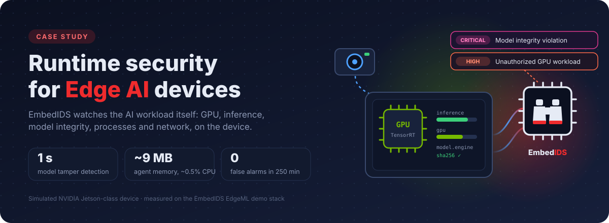

Runtime security for Edge AI devices¶
How EmbedIDS EdgeML catches rogue GPU workloads, model tampering and data exfiltration on a vision-inference device, in seconds, from about 9 MB of memory.

-
The challenge
Edge AI devices run valuable models on shared GPUs, in the field, often offline. Traditional endpoint agents are heavy, signature-driven and blind to what matters here: is the AI workload still behaving like itself?
-
The approach
An on-device agent built on the EmbedIDS core watches the compute, the inference pipeline, the deployed model, processes and network. It correlates them into incidents an operator can act on.
-
The result
Nine attack scenarios detected end to end, with model tampering flagged within 1 s. No false alarms over 250 simulated minutes. The agent uses ~0.5 % CPU and ~9 MB RAM.
Scope of this study
This case study covers the EmbedIDS EdgeML MVP, an open-source reference implementation. It runs against a high-fidelity simulation of an NVIDIA Jetson-class device running a computer-vision inference workload.
- All numbers are engineering measurements from that environment, not hardware benchmarks.
- The same detection engine ships with Linux and Jetson collectors.
- On-device Jetson validation is the next milestone (see the roadmap).
The challenge¶
A camera on a factory line or a retail shelf feeds frames to a TensorRT model on an embedded GPU. The device is unattended, often behind NAT, and updated rarely. Attacks against it don't look like attacks against a laptop:
| Threat | What actually happens on the device |
|---|---|
| GPU hijacking (cryptominers, rogue CUDA jobs) | GPU pinned near 100 %, legitimate inference throughput collapses |
| Model tampering | The engine file on disk changes; the device keeps "working" with backdoored outputs |
| Model or data theft | A process that is allowed to run reads the model and streams it out |
| Privilege escalation | A root shell appears among a handful of known services |
| Denial of service | CPU and memory exhausted, inference stalls |
| Blinding the defender | The security telemetry quietly stops |
Most of these leave no malware signature to match. But every one of them changes how an Edge AI device behaves. That is the signal EmbedIDS uses.
The approach: security designed around AI workload behavior¶
Instead of installing a traditional endpoint agent on an edge AI device, EmbedIDS EdgeML models what normal looks like for the AI workload itself:
-
Compute behavior
GPU and CPU utilization, GPU memory, power and temperature against the workload's expected profile.
-
AI workload health
Inference FPS, latency, errors and pipeline health against the 30 FPS baseline.
-
Model integrity
SHA-256 of the deployed engine against its approved hash, and who reads the model file.
-
Process & network behavior
Allow-listed processes and destinations, privileged processes and outbound volume.
Every one of these becomes a numeric metric in a common schema. The EmbedIDS core, a C11 library with zero heap allocation, evaluates them against thresholds and "sustained for N seconds" conditions every second.
Architecture¶

- Collectors are the only hardware-aware layer. Simulation, generic
Linux (
/proc,/sys) and NVIDIA Jetson (tegrastats, GPU sysfs) all implement the sameMetricCollectorinterface. - Detection is deterministic and explainable. There are 11 rules, and every alert carries the observed values, the thresholds it crossed and the metrics involved.
- Correlation turns alerts into incidents. Three rule-based patterns combine individual alerts that fire inside a time window.
- Standard outputs. Alerts go to a REST API and live dashboard, JSON lines, RFC 5424 syslog, webhooks and a local SQLite store with rolling retention.
Seeing it work¶
Scenario A: a cryptominer hijacks the GPU¶
A rogue process, unknown_worker, starts on the device and saturates the
GPU. Inference throughput drops from 30 FPS to around 10 FPS. Later in the
same run, the deployed model file is modified.

The chart above is recorded telemetry, not an illustration. Here is what EmbedIDS saw:
- +6 s: an unknown process has been running for longer than the 5 s
grace period →
MEDIUMUnknown process detected. - +13 s: the GPU stays above 85 % while inference stays below baseline
for the full 10 s sustain window →
HIGHGPU workload outside expected profile andMEDIUMInference performance degradation. - Same cycle: the three signals fall inside the 20 s correlation window
→
HIGHcorrelated incident Possible unauthorized GPU workload. - +29 s, one second after the model file was modified →
CRITICALAI model integrity violation.
The 10 s sustain window is deliberate: a legitimate burst of GPU work never pages anyone.


Every alert explains itself. This is the correlated incident exactly as the agent's REST API returned it:
{
"alert_id": "ALT-000067",
"timestamp": "2026-10-12T15:16:26Z",
"device_id": "demo-edge-001",
"severity": "high",
"category": "correlated_incident",
"rule": "unauthorized_gpu_workload",
"title": "Possible unauthorized GPU workload",
"description": "GPU utilization increased while inference throughput decreased and an unknown process was detected.",
"evidence": {
"gpu_utilization": 96.5,
"inference_rate": 12.8,
"process": "unknown_worker",
"window_seconds": 20,
"correlated_alerts": [
"ALT-000064 rogue_process",
"ALT-000065 unexpected_gpu_workload",
"ALT-000066 inference_degradation"
]
},
"signals": ["security.unknown_processes", "gpu.utilization", "ai.inference.rate"]
}
Scenario B: the AI model is tampered with¶
Model tampering is the attack with the highest stakes and the least visible symptoms. In this scenario 4 KB of the TensorRT engine are overwritten on disk. The agent re-hashes the file whenever its size, modification time or inode changes, and on a schedule as a safety net, so the change is caught on the very next sample:
[CRITICAL] AI model integrity violation
EXPECTED: 57869ad7a571163daf939d5e3ebe1dcfcb81437654d1636b0cdfdc233d92f56c
CURRENT: e406c9968759cdf53726f05c7b51e8408a3c858e93a30df2da62966fde22eae2
The configuration file and the agent binary are protected the same way. Editing the agent's own configuration on a running device raises a Configuration integrity violation.
Scenario C: model exfiltration through a trusted process¶
This attacker is quieter. Nothing new is launched: the allow-listed
mqtt-client reads the model and streams it to an unknown host. A
process allow list alone would miss it entirely.

Within half a second, EmbedIDS flags two things:
- the connection to
203.0.113.45:8443, escalated toHIGHbecause of its volume; - the unexpected read of the model file.
By +4.5 s the sustained outbound anomaly confirms the pattern, and the
three signals correlate into a CRITICAL Possible model/data
exfiltration incident.

More scenarios¶
| Scenario | What the attacker does | What EmbedIDS raises |
|---|---|---|
| Privilege escalation | Spawns rogue-shell as UID 0 |
HIGH Unauthorized privileged process |
| Denial of service | CPU to 100 %, memory to 95 %, inference to 5 FPS | HIGH Resource exhaustion, MEDIUM Inference degradation |
| Inference degradation | Throughput falls to ~14 FPS with no rogue process | MEDIUM Inference performance degradation |
| Agent tampering | Security telemetry stops | CRITICAL Telemetry heartbeat lost: "Security telemetry unavailable. Possible collector failure or tampering." |
| Combined attack | Privilege escalation and DoS together | CRITICAL correlated Privileged process exhausting device resources |
From signals to incidents¶

Correlation is rule-based and configured in YAML, so it stays predictable and auditable:
correlations:
- name: unauthorized_gpu_workload
severity: high
window_seconds: 20
requires:
- security.unknown_processes
- gpu.utilization
- ai.inference.rate
Results¶

-
1 s
Model tampering to
CRITICALalert: the next 1 s sample. The target was under 2 s. -
0 false alarms
Over 250 minutes of normal operation across 25 randomized workload seeds.
-
~9 MB · ~0.5 % CPU
Agent footprint at 1 s sampling, including the REST API serving the live dashboard.
-
≤ 3 ms
Per-cycle detection, correlation and alerting time. The target was under 100 ms.
| Measure | Target | Measured |
|---|---|---|
| Agent CPU overhead | < 5 % | ~0.5 % of one core |
| Agent memory | < 100 MB | ~8-10 MB RSS |
| Processing latency per cycle | < 100 ms | ≤ 3 ms |
| Alert generation after detection | < 1 s | same cycle |
| Model tamper detection | < 2 s | 1 s |
| High-severity alerts in normal operation | 0 | 0 |
The release is backed by an automated test suite:
- 112 unit and integration tests, including every scenario replayed on a deterministic virtual clock;
- an end-to-end suite that drives real agent and simulator processes through all attacks;
- the same acceptance suite run against the Docker Compose stack.
Built to live on the device¶
- Lean by design. The detection core is the EmbedIDS C library: fixed history buffers and zero heap allocation. The agent bounds its own threads and allocator arenas so it stays at a few megabytes.
- Least privilege. The agent runs as a dedicated
embedidsuser with no Linux capabilities, a read-only filesystem, a hardened systemd unit and resource limits. -
Self-protecting. The agent checks:
- its configuration, hashed at startup and re-checked continuously;
- its own binary hash, which is exposed for attestation;
- per-collector heartbeats.
It is restarted automatically if it ever crashes.
-
Explainable. Every alert records which metric crossed which threshold and for how long, with the contributing alerts attached.
Path to NVIDIA Jetson¶

Moving from simulation to hardware is a configuration change, not a rewrite:
| Phase | Status | Scope |
|---|---|---|
| Simulation MVP | Done | Rules, correlation, dashboard, tests |
| 1 · Linux telemetry | Done | /proc and /sys collectors, verified on a live Linux host |
| 2 · Jetson metrics | Built, validation next | tegrastats and GPU sysfs collectors, parser tested on JetPack 4 and 6 output |
| 3 · TensorRT workload | Planned | FPS, latency, errors and engine hash from the inference pipeline |
| 4 · System service | Planned | Hardened systemd unit (already included) on a fielded device |
Beyond the MVP, the roadmap includes:
- statistical baselines (EWMA, standard deviation);
- eBPF and auditd collectors;
- TensorRT engine provenance;
- secure-boot and TPM attestation status;
- fleet-level management.
Try it yourself¶
The full demo runs on any laptop with Docker. No NVIDIA hardware is required.
The engineering documentation covers the
architecture,
the demo guide,
the REST API
and hardware porting.
It is all in the edgeml/
directory of the EmbedIDS repository.
Building on Edge AI hardware?
We're looking for early adopters to validate EmbedIDS EdgeML on fielded Jetson devices. Get in touch on LinkedIn or open an issue.
Measurements were taken on the EmbedIDS EdgeML Docker Compose demo
(x86-64 host, 1 s sampling) in October 2026. The charts are rendered from
telemetry recorded from the running agent with
edgeml/tools/case_study_charts.py.
NVIDIA, Jetson and TensorRT are trademarks of NVIDIA Corporation. This case study describes a simulation of a Jetson-class device and does not imply endorsement by NVIDIA.